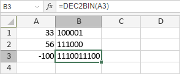

DEC2BIN funkcija
Funkcija DEC2BIN je jedna od inženjerskih funkcija. Koristi se za konverziju decimalnog broja u binarni broj.
Sintaksa
DEC2BIN(number, [places])
Funkcija DEC2BIN ima sledeće argumente:
| Argument | Opis |
|---|---|
| number | Decimalni broj unet ručno ili uključen u ćeliju na koju se referišete. |
| places | Broj cifara koje će se prikazati. Ako se izostavi, funkcija koristi minimalan broj cifara. |
Napomene
Ako je navedeni broj places manji ili jednak 0, funkcija će vratiti grešku #NUM!.
Kako primeniti funkciju DEC2BIN.
Primeri
Slika ispod prikazuje rezultat koji vraća funkcija DEC2BIN.
